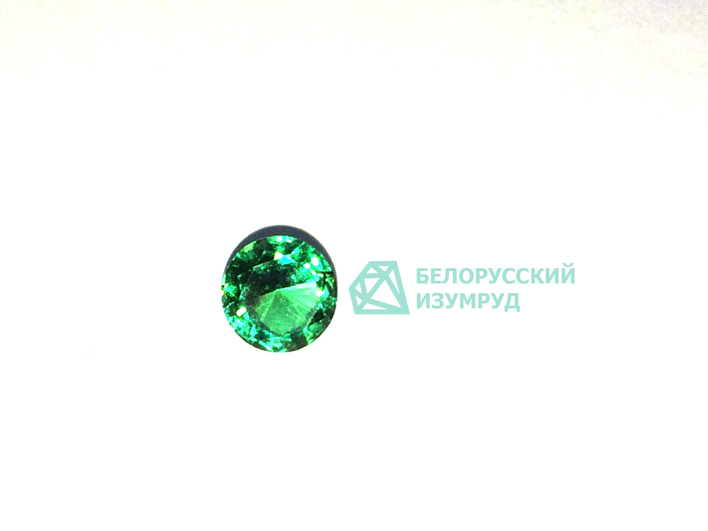
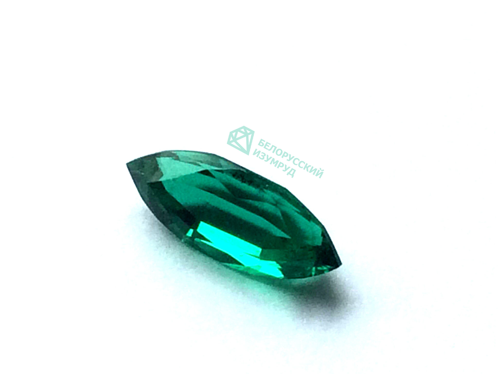
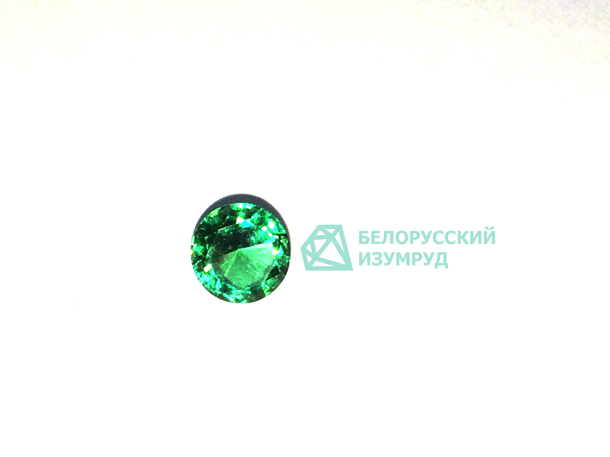
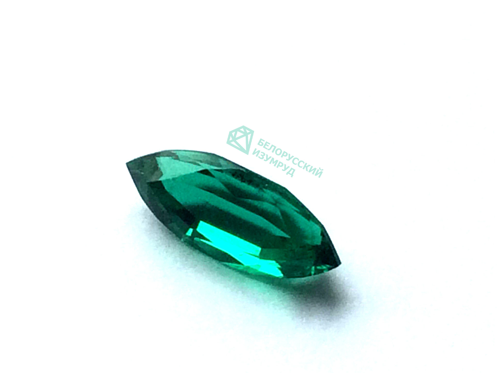
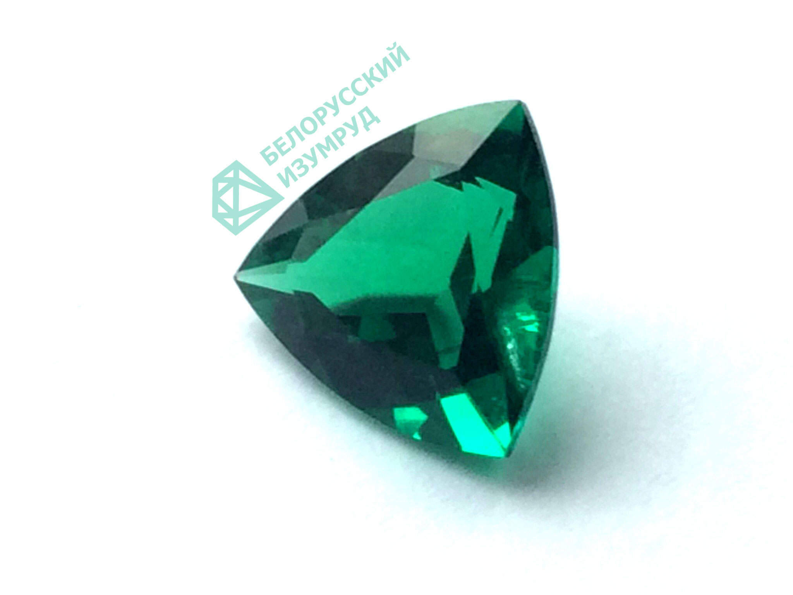
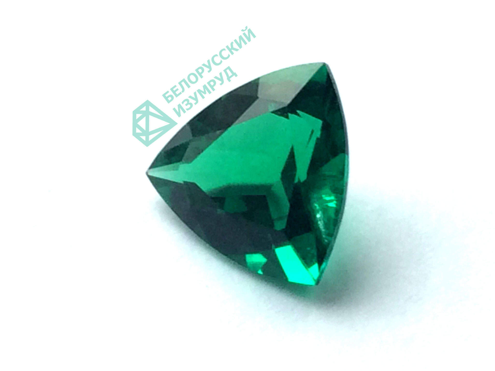

Каталог
Огранка – это технологический процесс обработки драгоценных камней, который осуществляется на профессиональном сверхточном оборудовании. Помимо придания формы, качественная огранка максимально выявляет блеск камня, что, в свою очередь, влияет на его ценность.
Предлагаем ознакомиться с самыми популярными видами огранки:
Круг
Огранка «круг» часто используется для россыпей одинаковых мелких камней на одном украшении. Она симметрична, хорошо полируется и обладает максимальной светопропускающей способностью. У круглой огранки существует множество вариаций, но в классической огранке — 57 граней, в которых раскрываются основные ювелирные свойства камня: свет, отражаясь от нижних граней, приобретает радужное сияние и отражается наружу
Цена: 130 BYN/карат
Принцесса
Как и круглая огранка, принцесса передает игру света в камне, но при этом имеет форму прямоугольника. Придумана она была в конце шестидесятых годов и с тех пор является весьма популярной. При обработке таким способом самородок теряет меньше исходного веса и соответственно стоит несколько дешевле. Принцесса чаще всего используется для колец, в этом случае углы должны быть защищены, так как являются очень хрупкими.
Цена: 120 BYN/карат
Изумруд
Огранка представляет собой прямоугольник и применяется для самоцветов большого размера и очень высокой чистоты. Это связано с тем, что в этом случае любой недостаток невозможно будет скрыть. Несколько уступает огранке в форме круга или принцессе по сиянию, но превосходит их по яркости отдаваемых вспышек света. Используется для колец, браслетов, подвесок, ожерелий и серег.
Цена: 110 BYN/карат
Кабошон
Один из самых древних видов обработки, при котором камню придаётся выпуклая форма без граней. Обычно кабошон выбирают для огранки полупрозрачных или непрозрачных вставок, «звёздчатых» камней, а также минералов с эффектом «кошачьего глаза». Кабошон должен быть идеально гладким, поэтому чрезвычайно важно качество шлифовки и полировки камня.
Цена: 100 BYN/карат
Овал
Овал — разновидность круглой огранки — в последнее время является наиболее популярной формой для центральных камней на обручальных кольцах.Вставка имеет форму овала с гранями в виде клиньев. В отличие от круглой, которая была известна уже в конце XVII века, овальная огранка появилась сравнительно недавно, лишь в 1960-е годы.
Цена: 120 BYN/карат
Груша
Вопреки своему названию, эта огранка больше напоминает не грушу, а каплю с верхней гладкой площадкой, которая обеспечивает игру света, и боковыми гранями-клиньями. В форме груши обрабатываются как крупные, так и небольшие камни. Разновидностями классической грушевидной формы являются капля и бриолет.
Цена: 120 BYN/карат
Маркиз
При правильной огранке маркиз напоминает лодочку или зерно с заострёнными уголками. Обычно ширина камня примерно в два раза меньше его длины, что позволяет ювелирам закреплять маркизы не только в кольца, но и в серьги, подвески и браслеты. Разновидность этой огранки — форма челночок, которая имеет меньшее количество граней и более узкую верхнюю площадку.
Цена: 120 BYN/карат
Триллион
Одна из самых эффектных форм камней, представляет собой треугольник с клиньями. Преимущество триллиона в том, что форма и количество граней может меняться в зависимости от характеристик минерала, дизайна изделий и вкуса огранщика. Триллион впервые был изобретён в Амстердаме, но в настоящее время это одна из самых популярных в мире огранок для драгоценных и полудрагоценных камней.
Цена: 120 BYN/карат
Сердце
Считается одной из самых сложных и дорогостоящих видов огранки, поэтому её часто применяют в эксклюзивных украшениях, созданных специально в подарок любимым.
Приобретая украшения с камнями в виде огранки «сердце», обратите внимание на ровность контура вставки — красота огранки «сердце» напрямую зависит от мастерства огранщика.
Цена: 130 BYN/карат
Багет
Разновидность ступенчатой огранки, которая имеет прямоугольный контур. Багет — своего рода зеркало качества, отражающее как достоинства, так и недостатки камня. Так, во вставках этой формы даже невооружённым глазом заметны внутренние дефекты или плохая огранка. Поэтому при покупке украшений с багетами обращайте внимание на качество камня.
Цена: 110 BYN/карат
Примеры работ
{kind=link}
{kind=link}
 Груша
Груша
 Изумруд
Изумруд
 Карбошон
Круг
Маркиз
Карбошон
Круг
Маркиз
{kind=link}
{kind=link}
 Овал
Овал
 Принцесса
Триллион
Принцесса
Триллион
{kind=link}
 Белорусский изумруд
Белорусский изумруд